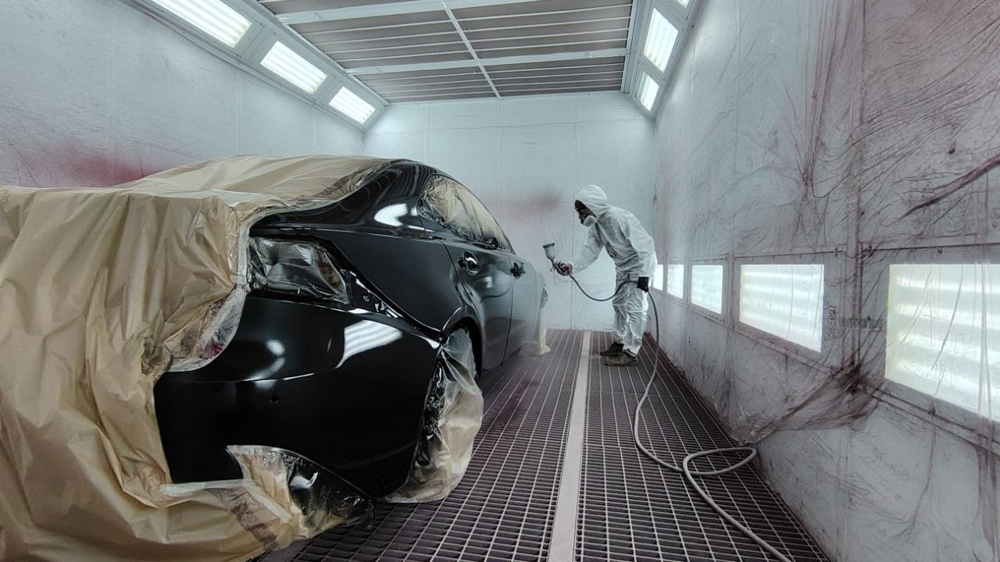

REALIZACJA 1
Naprawa blacharsko-lakiernicza
Przykład naprawy obejmującej uszkodzenia karoserii, przygotowanie elementów oraz lakierowanie.
Każda naprawa jest oceniana indywidualnie. Zakres prac zależy od stanu pojazdu i rodzaju uszkodzenia.

Agil Auto Serwis
Efekty pracy
W tej sekcji pokazujemy wybrane realizacje Agil Auto Serwis: naprawy blacharskie, przygotowanie elementów, lakierowanie, usuwanie rdzy, polerowanie oraz efekty przed i po naprawie.
Najlepszym sposobem oceny pracy jest efekt końcowy. Dlatego pokazujemy zdjęcia przed naprawą, w trakcie przygotowania oraz po zakończeniu pracy.
REALIZACJA 1
Przykład naprawy obejmującej uszkodzenia karoserii, przygotowanie elementów oraz lakierowanie.
Każda naprawa jest oceniana indywidualnie. Zakres prac zależy od stanu pojazdu i rodzaju uszkodzenia.
Wstępna wycena
Wyślij zdjęcia uszkodzenia na WhatsApp. Wstępnie ocenimy zakres pracy i ustalimy dalsze kroki.